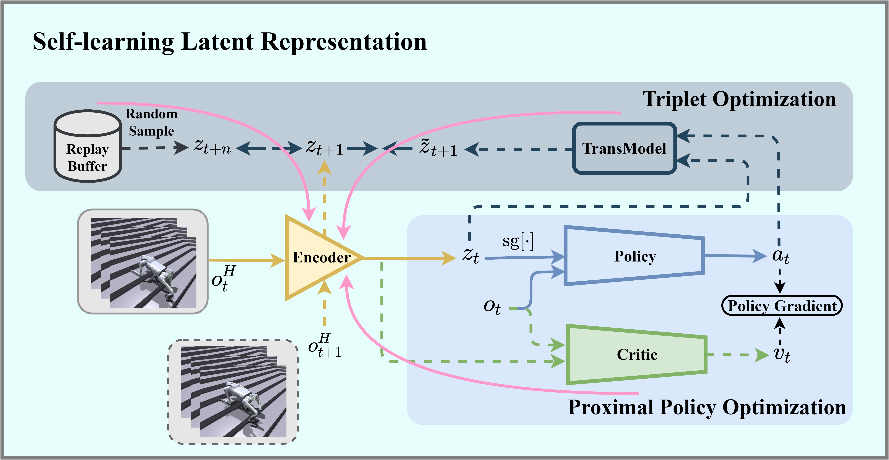

Without relying on any privileged information, we can train a sufficiently robust motor strategy. In actual deployment, the quadruped robot can cross a variety of challenging terrain.
Abstract
Traditional research on quadruped robot gait control based on reinforcement learning relies on privileged information to assist training. However, privileged information can only be obtained in the simulation environment and cannot be used in the real world. Therefore, researchers often use supervised learning methods to train encoders to fit privileged information. This method faces two challenges in reality: On the one hand, it is difficult to infer accurate privilege information by relying on the ontological perception history in reality; On the other hand, there are differences between simulation data and real data that are difficult to bridge. In order to solve this problem, this paper proposes a new algorithm: Self-learning Latent Representation (SRL), which can train efficient policies without using any privileged information.
Framework Pipeline

Our goal is to construct a one-stage end-to-end system without privileged information, utilizing proprioceptive sensors to measure and control joint movements. Unlike traditional privileged learning methods, our approach enables the robot to autonomously encode information without relying on privileged data.